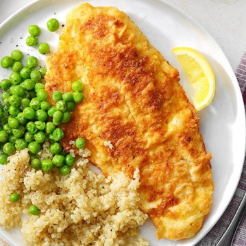

Corn Meal Crusted Catfish
What is Corn Meal Crusted Catfish?
Cornmeal-crusted catfish! It’s crispy on the outside, tender and flaky on the inside, and perfect alongside cornbread, collard greens, coleslaw, and biscuits.
Ingredients
1 large egg, lightly beaten
2 tablespoons lemon juice
1/2 cup all-purpose flour
1/4 cup yellow cornmeal
1 teaspoon Cajun seasoning
1/2 teaspoon garlic powder
1/2 teaspoon salt
4 catfish fillets (6 ounces each)
3 tablespoons canola oil
Instructions / How to Cook
1. In a shallow bowl, combine egg and lemon juice. In another shallow bowl, combine flour, cornmeal, Cajun seasoning, garlic powder and salt. Dip catfish into egg mixture, then coat with cornmeal mixture.
2. In a large skillet, heat oil over medium heat. Fry fillets, two at a time, just until fish begins to flake easily with a fork, 5-6 minutes on each side.